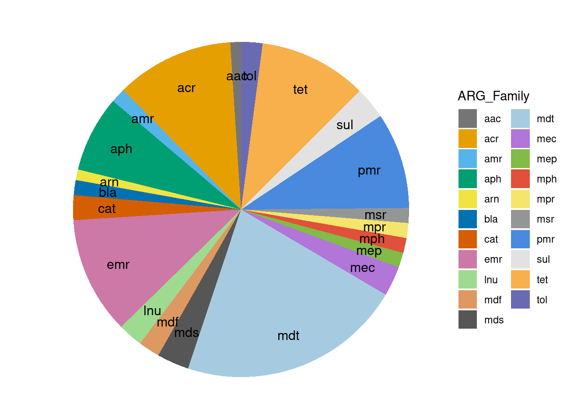
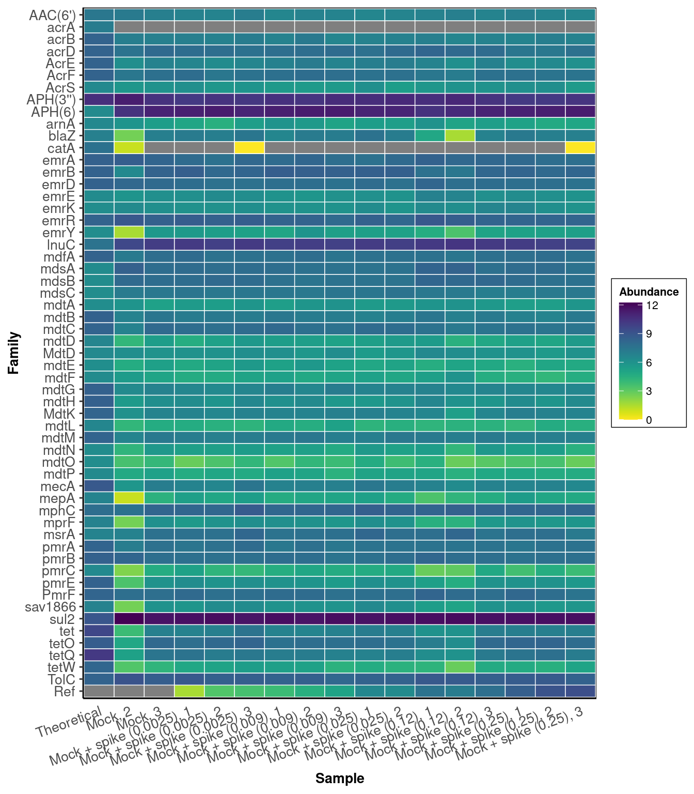
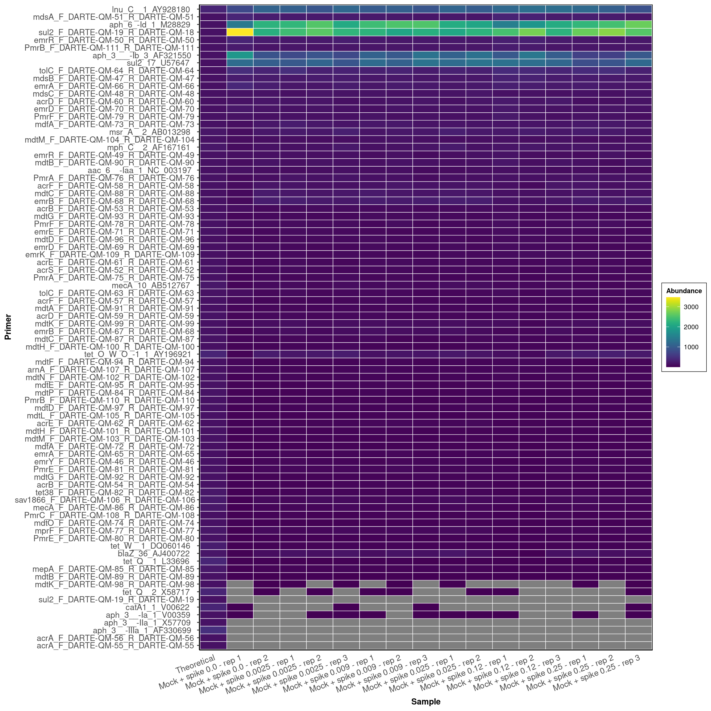
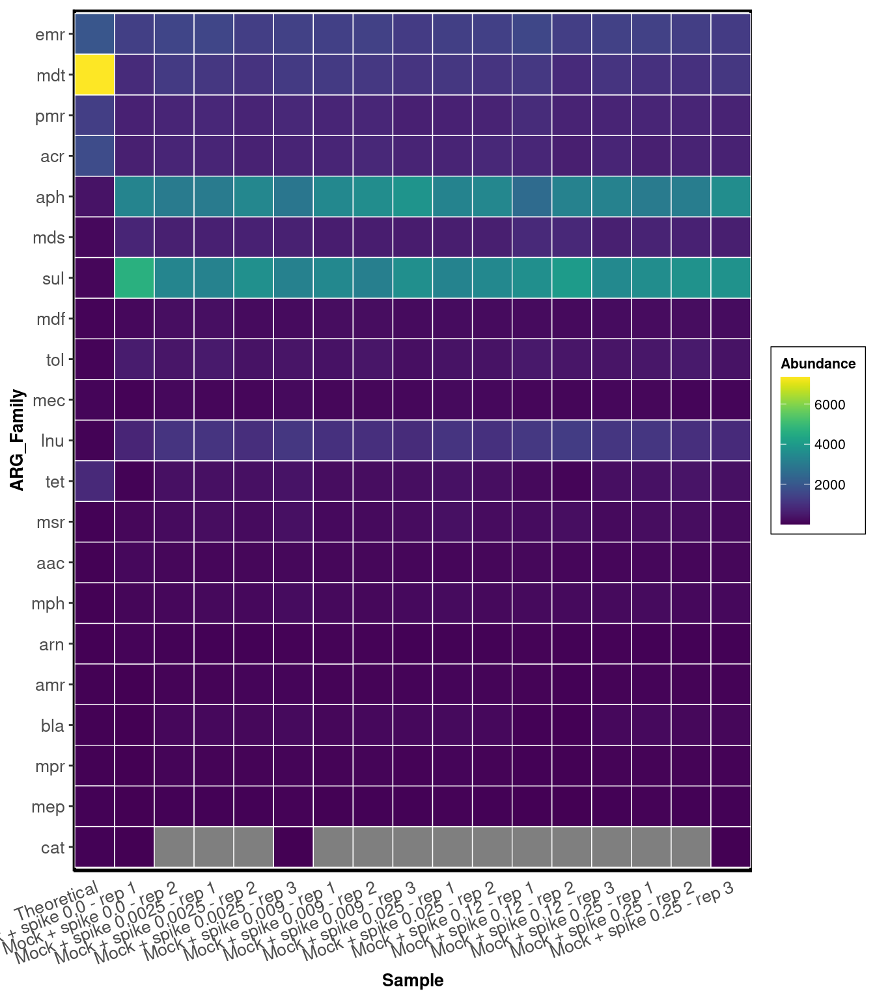
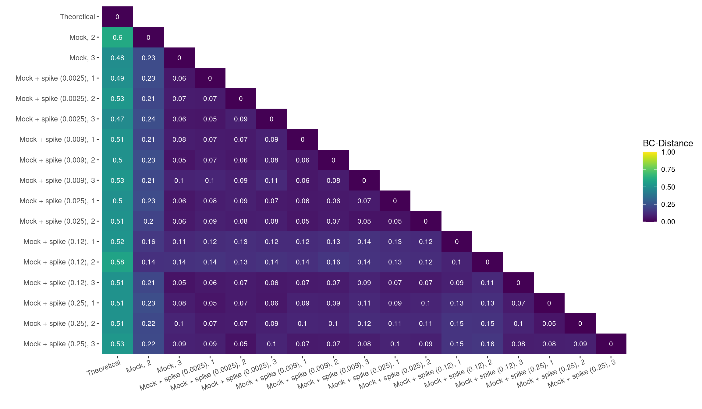
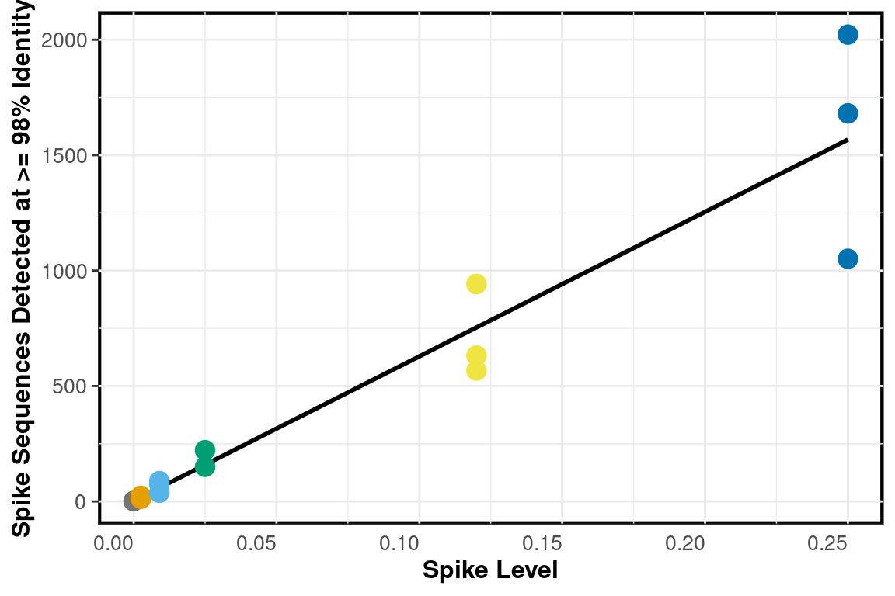
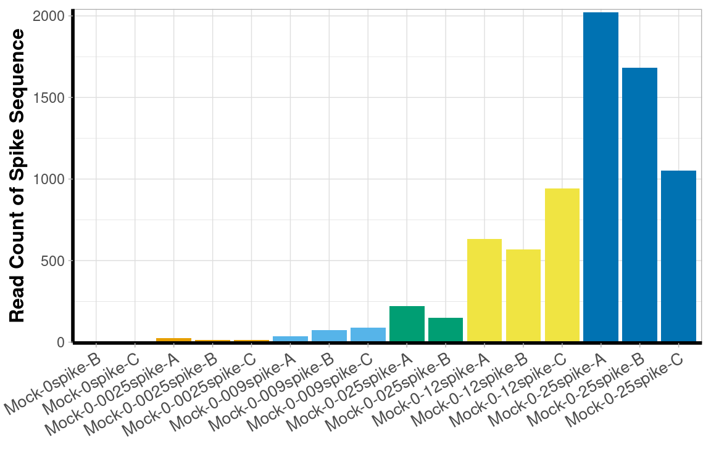
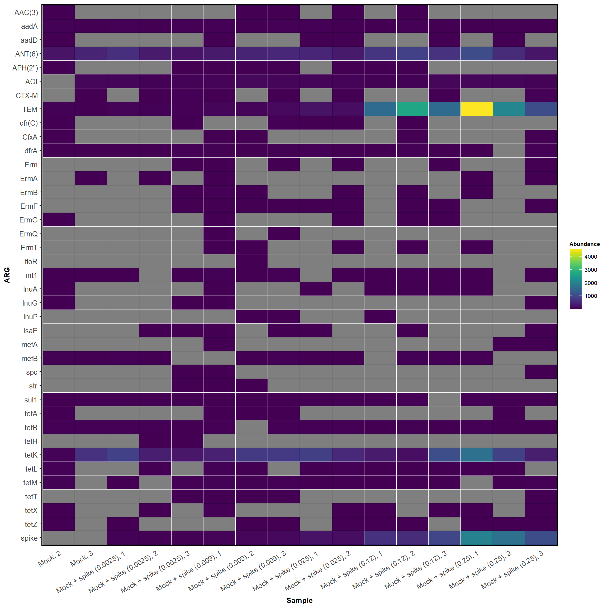
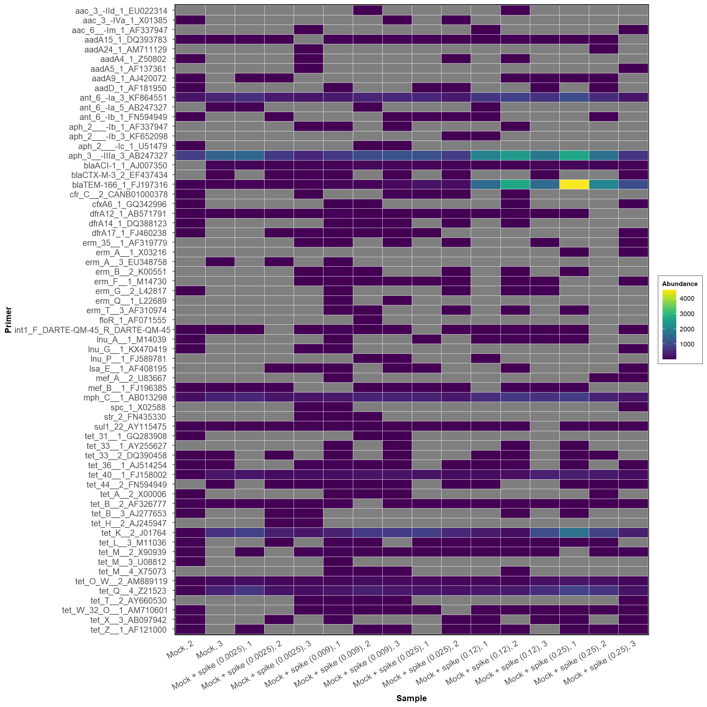

mock_samples <- as.character(metadata[grep('Mock', metadata$`ID`),][`Passed QC` == TRUE][["Sample"]])
for_blast <- data.table::fread('../data/mock/forward_primers.blast')
for_blast <- merge(for_blast, classifications, by.x = "V1", by.y = "Primer")
for_blast <- for_blast[ARG != "16S"]
for_blast <- for_blast[V3 == 100]
for_blast <- for_blast[V4 >= 18]
rev_blast <- data.table::fread('../data/mock/reverse_primers.blast')
rev_blast <- merge(rev_blast, classifications, by.x = "V1", by.y = "Primer")
rev_blast <- rev_blast[ARG != "16S"]
rev_blast <- rev_blast[V3 == 100]
rev_blast <- rev_blast[V4 >= 18]
mock_blast <- for_blast[paste0( for_blast[[1]], for_blast[[2]]) %in% paste0(rev_blast[[1]], rev_blast[[2]]),]
strains[, Abundance := Genome_copies_per_microgram * micrograms]
mock_genome <- vector()
i=1
for(genome in mock_blast$V2){
genome <- mock_genome_names[sapply(strsplit(mock_genome_names, ' '), FUN=function(x){any(x %in% genome)})]
genome <- strains[apply(strains,1,FUN=function(x){any(x %in% unlist(strsplit(genome, " ")))})]$Strain
mock_genome <- c(mock_genome, genome)
}
set(mock_blast, j = "V2", value = mock_genome)
setorder(mock_blast, V2, V9)
mock_expected_counts <- mock_blast[,c('V2', 'V1', 'V9', 'ARG', 'ARG_Family')]
setnames(mock_expected_counts, c('V2','V1'), c('Microbe', 'Primer'))
mock_expected_counts <- merge(mock_expected_counts, strains, by.x = "Microbe", by.y = "Strain")
mock_expected_counts <- mock_expected_counts[, .(count = sum(Abundance)), by = c( 'ARG_Family', "ARG", 'Primer', "Microbe")]
mock_expected_counts[, count := round(count/sum(count), 4)]
mock_expected_counts[,Sample := 'Theoretical']
setcolorder(mock_expected_counts, c("Sample", "Microbe", "ARG", "ARG_Family", 'Primer', "count"))
graph_data <- mock_expected_counts[, c("Sample", "ARG_Family", "count")]
graph_data <- graph_data[, lapply(.SD, sum, na.rm=TRUE), by=ARG_Family, .SDcols=c("count")]
set(graph_data, j = "ARG_Family", value = factor(graph_data$ARG_Family, levels = sort(graph_data$ARG_Family)))
setorder(graph_data, -ARG_Family)
graph_data[, ypos := cumsum(count)- 0.5*count]
mock_profile <- ggplot(graph_data, aes(x="", y=count, fill=ARG_Family)) +
geom_bar(stat="identity", width=1) +
coord_polar("y", start=0) +
theme_void() +
scale_fill_manual(values = schuylR::create_palette(length(unique(graph_data[['ARG_Family']])))) +
geom_text(aes(y = ypos, label = ARG_Family), color = "black", size=4, nudge_x = 0.3)
mock_expected_ARGs <- c(unique(sort(mock_expected_counts$Primer)), 'spike')
mock_observed_counts <- read_counts[, c(1:3, grep('Mock', colnames(read_counts))), with = FALSE]
mock_observed_counts <- mock_observed_counts[rowSums(mock_observed_counts[,-c(1:3)]) > 1,]
mock_successful_primers <- mock_expected_ARGs[mock_expected_ARGs %in% mock_observed_counts$Primer]
unexpected_primers <- mock_observed_counts$Primer[!(mock_observed_counts$Primer %in% mock_expected_ARGs)]
setnames(mock_observed_counts, colnames(mock_observed_counts)[-c(1:3)],
as.character(metadata$Sample[match(colnames(mock_observed_counts)[-c(1:3)], metadata$ID)]))classification <- 'ARG'
expected_genes <- mock_expected_counts[,c('Sample', classification, 'count'), with=FALSE]
expected_genes[, Abundance := count * 20000]
expected_genes <- dcast(expected_genes, ARG ~ Sample, value.var = 'Abundance', fun.aggregate = sum)
graph_data <- mock_observed_counts[get(classification) %in% c(mock_expected_counts[[classification]], "spike")]
graph_data <- merge(expected_genes, graph_data[,-c(1:3)[!(colnames(graph_data)[1:3] %in% classification)],
with=FALSE], by = classification, all = TRUE)
graph_data <- schuylR::replace_NA(graph_data)
graph_data <- rarefy(data=graph_data, min(colSums(graph_data[,-1])))
graph_data <- melt(graph_data, id.vars = classification, variable.name = 'Sample', value.name = 'Abundance')
set(graph_data, j = 'Sample', value = factor(graph_data[['Sample']],
levels = c('Theoretical', mock_samples)))
graph_data <- graph_data[, lapply(.SD, sum, na.rm=TRUE), by = c('Sample', classification), .SDcols=c("Abundance")]
set(graph_data, j = classification, value = factor(as.character(graph_data[[classification]]),
levels = rev(c(sort(unique(graph_data[get(classification) != 'spike'][[classification]])), 'spike'))))
set(graph_data, which(graph_data[['Abundance']] < 1), j='Abundance', value=NA)
set(graph_data, j = "Abundance", value = log(graph_data$Abundance, base = 2))
ARG_counts <- ggplot(graph_data, aes_string("Sample", classification, fill = "Abundance")) +
geom_tile(color = "white", size = 0.25) +
theme_classic() +
theme(axis.text.x = element_text(angle = 20, hjust = 1, size = 10),
axis.text.y = element_text(hjust = 0.95, size = 10),
axis.title.x = element_text(size = 10, face = "bold"),
axis.title.y = element_text(size = 10, face = "bold"),
axis.ticks.x = element_blank(),
legend.title = element_text(size = 8, face = "bold"),
legend.text = element_text(size = 8),
legend.spacing.x = unit(0.005, "npc"),
legend.key.size = unit(6, "mm"),
legend.background = element_rect(fill = (alpha = 0), color = "black", size = 0.25),
panel.background = element_rect(color = "black", size = 1.4),
strip.text.x = element_text(size = 10, face = "bold"),
strip.background = element_rect(colour = "black", size = 1.4)) +
scale_x_discrete(expand = expansion(mult = 0, add = 0.53)) +
ggraph::scale_fill_viridis(direction = -1, limits = c(min(graph_data$Abundance, na.rm = T), max(graph_data$Abundance, na.rm = T))) +
labs(x = "Sample")DARTE-QM found 55 (98.2%) of the 56 primers in the Mock-Community pangenomes that were targeted.

DARTE-QM found 80 (94.1%) of the 85 primers in the Mock-Community pangenomes that were targeted.
classification <- 'Primer'
expected_genes <- mock_expected_counts[,c('Sample', classification, 'count'), with=FALSE]
expected_genes[, Abundance := count * 20000]
expected_genes <- dcast(expected_genes, Primer ~ Sample, value.var = 'Abundance', fun.aggregate = sum)
graph_data <- mock_observed_counts[get(classification) %in% c(mock_expected_counts[[classification]], "spike")]
graph_data <- merge(expected_genes, graph_data[,-c(1:3)[!(colnames(graph_data)[1:3] %in% classification)],
with=FALSE], by = classification, all = TRUE)
graph_data <- schuylR::replace_NA(graph_data)
graph_data <- rarefy(data=graph_data, min(colSums(graph_data[,-1])))
graph_data <- melt(graph_data, id.vars = classification, variable.name = 'Sample', value.name = 'Abundance')
set(graph_data, j = 'Sample', value = factor(graph_data[['Sample']],
levels = c('Theoretical', mock_samples)))
primer_graph_data <- graph_data[, lapply(.SD, sum, na.rm=TRUE), by = c('Sample', classification), .SDcols=c("Abundance")]
setorder(primer_graph_data, Abundance)
set(primer_graph_data, j = classification, value = factor(as.character(primer_graph_data[[classification]]),
levels = unique(as.character(primer_graph_data[[classification]]))))
set(primer_graph_data, which(primer_graph_data[['Abundance']] < 1), j='Abundance', value=NA)
primer_graph_data$Primer <- gsub('_.?_DARTE-QM', '', primer_graph_data$Primer)
set(primer_graph_data, j = 'Primer', value = factor(primer_graph_data$Primer, levels = rev(gsub('_.?_DARTE-QM', '', mock_expected_ARGs))))
Primer_counts <- ggplot(primer_graph_data, aes_string("Sample", classification, fill = "Abundance")) +
geom_tile(color = "white", size = 0.25) +
theme_classic() +
theme(axis.text.x = element_text(angle = 20, hjust = 1, size = 10),
axis.text.y = element_text(hjust = 0.95, size = 10),
axis.title.x = element_text(size = 10, face = "bold"),
axis.title.y = element_text(size = 10, face = "bold"),
axis.ticks.x = element_blank(),
legend.title = element_text(size = 8, face = "bold"),
legend.text = element_text(size = 8),
legend.spacing.x = unit(0.005, "npc"),
legend.key.size = unit(6, "mm"),
legend.background = element_rect(fill = (alpha = 0), color = "black", size = 0.25),
panel.background = element_rect(color = "black", size = 1.4),
strip.text.x = element_text(size = 10, face = "bold"),
strip.background = element_rect(colour = "black", size = 1.4)) +
scale_x_discrete(expand = expansion(mult = 0, add = 0.53)) +
ggraph::scale_fill_viridis(limits = c(min(graph_data$Abundance, na.rm = T), max(graph_data$Abundance, na.rm = T))) +
labs(x = "Sample")
classification <- 'ARG_Family'
expected_genes <- mock_expected_counts[,c('Sample', classification, 'count'), with=FALSE]
expected_genes[, Abundance := count * 20000]
expected_genes <- dcast(expected_genes, ARG_Family ~ Sample, value.var = 'Abundance', fun.aggregate = sum)
graph_data <- mock_observed_counts[get(classification) %in% c(mock_expected_counts[[classification]], "spike")]
graph_data <- merge(expected_genes, graph_data[,-c(1:3)[!(colnames(graph_data)[1:3] %in% classification)],
with=FALSE], by = classification, all = TRUE)
graph_data <- schuylR::replace_NA(graph_data)
graph_data <- rarefy(data=graph_data, min(colSums(graph_data[,-1])))
graph_data <- melt(graph_data, id.vars = classification, variable.name = 'Sample', value.name = 'Abundance')
set(graph_data, j = 'Sample', value = factor(graph_data[['Sample']],
levels = c('Theoretical', mock_samples)))
graph_data <- graph_data[, lapply(.SD, sum, na.rm=TRUE), by = c('Sample', classification), .SDcols=c("Abundance")]
setorder(graph_data, Abundance)
set(graph_data, j = classification, value = factor(as.character(graph_data[[classification]]), levels = unique(as.character(graph_data[[classification]]))))
set(graph_data, which(graph_data[['Abundance']] < 1), j='Abundance', value=NA)
setorder(graph_data, Sample)
ARG_Family_counts <- ggplot(graph_data, aes_string("Sample", classification, fill = "Abundance")) +
geom_tile(color = "white", size = 0.25) +
theme_classic() +
theme(axis.text.x = element_text(angle = 20, hjust = 1, size = 10),
axis.text.y = element_text(hjust = 0.95, size = 10),
axis.title.x = element_text(size = 10, face = "bold"),
axis.title.y = element_text(size = 10, face = "bold"),
axis.ticks.x = element_blank(),
legend.title = element_text(size = 8, face = "bold"),
legend.text = element_text(size = 8),
legend.spacing.x = unit(0.005, "npc"),
legend.key.size = unit(6, "mm"),
legend.background = element_rect(fill = (alpha = 0), color = "black", size = 0.25),
panel.background = element_rect(color = "black", size = 1.4),
strip.text.x = element_text(size = 10, face = "bold"),
strip.background = element_rect(colour = "black", size = 1.4)) +
scale_x_discrete(expand = expansion(mult = 0, add = 0.53)) +
ggraph::scale_fill_viridis(limits = c(min(graph_data$Abundance, na.rm = T), max(graph_data$Abundance, na.rm = T))) +
labs(x = "Sample")
dist_matrix <- primer_graph_data
dist_matrix <- dcast(dist_matrix[Primer %in% dist_matrix[, sum(Abundance), by = 'Primer'][V1 > 0]$Primer],
Primer ~ Sample, value.var = 'Abundance')
replace_DT_NA(dist_matrix)
dist_matrix <- as.matrix(round(vegdist(t(dist_matrix[,-c(1)])), 3))
dist_matrix_plot <- dist_matrix
dist_matrix_plot[upper.tri(dist_matrix)] <- NA
dist_matrix_plot <- data.table(melt(dist_matrix_plot))
set(dist_matrix_plot, j = "Var1", value = factor(dist_matrix_plot$Var1, levels = rev(unique(dist_matrix_plot$Var1))))
dist_matrix_plot <- ggplot(data = dist_matrix_plot, aes(x=Var2, y=Var1, fill=value)) +
geom_tile() +
viridis::scale_fill_viridis(limits=c(0,1), na.value="white") +
theme(
axis.text.x = element_text(hjust = 0.95, angle = 20),
panel.background = element_rect(fill = "white", color = "white")
) +
labs(x = "", y = "", fill = "BC-Distance") +
geom_text(aes(Var2, Var1, label = round(value,2)), color = "white", size = 3)Assessing the ARGs found in the pangenome of the mock-community, DARTE-QM showed high precision with the mean distance between all observed-samples found to be 0.1, whereas the accuracy compared to our theoretical distribution was weaker, with a mean distance of 0.52.

graph_data <- melt(spike_counts, id.vars = c('ARG_Family','ARG', 'Primer'))
setnames(graph_data, colnames(graph_data[,-c(1:3)]), c("Sample", "Spike"))
graph_data[, Spike_Level := as.numeric(gsub('-','.',
gsub('Mock-','', gsub('spike-.?','', metadata$ID[match(as.character(graph_data$Sample), metadata$Sample)]))))]
setkey(graph_data, 'Spike_Level')
graph_data[, Color := schuylR::create_palette(length(unique(graph_data[['Spike_Level']])))[as.factor(graph_data[['Spike_Level']])]]The added levels of the spike-sequence were detected with a linear relation to their laboratory concentrations with an \(R^{2}\) = 0.91.
spike_points <- ggplot(graph_data, aes_string(x = 'Spike_Level', y = 'Spike')) +
geom_smooth(formula = y~x, method = "lm", se = FALSE, aes(x = Spike_Level, y = Spike), color = 'black' ) +
geom_point(stat = "identity", size = 4, alpha = 1, position = position_dodge(width = 0), color = graph_data$Color) +
theme_bw() +
theme(axis.text.x = element_text(hjust = 1, size = 10),
axis.text.y = element_text(hjust = 0.95, size = 10),
axis.title.x = element_text(size = 12, face = "bold"),
axis.title.y = element_text(size = 12, face = "bold"),
axis.ticks.x = element_blank(),
legend.title = element_text(size = 10, face = "bold"),
legend.text = element_text(size = 8),
legend.spacing.x = unit(0.005, "npc"),
legend.key.size = unit(4, "mm"),
legend.background = element_rect(fill = (alpha = 0)),
panel.background = element_rect(color = "black", size = 1.5, fill = "white"),
panel.spacing = unit(0.015, "npc"),
strip.text.x = element_text(size = 10, face = "bold", color = "black"),
strip.background = element_rect(colour = "black", size = 1.4, fill = "white")) +
labs(x = "Spike Level", y = "Spike Sequences Detected at >= 98% Identity")
spike_bars <- ggplot(graph_data,
aes_string(x = 'Sample', y = 'Spike')) +
geom_bar(stat = "identity", size = 0.45, alpha = 1, position = "dodge",
fill = graph_data$Color) +
theme_light() +
theme(
axis.line.x = element_line(
colour = 'black',
size = 1,
linetype = 'solid'
),
axis.line.y = element_line(
colour = 'black',
size = 1,
linetype = 'solid'
),
axis.text.x = element_text(
size = 10,
vjust = 1,
hjust = 1,
angle = 30
),
axis.title.x = element_text(size = 12, face = "bold"),
axis.title.y = element_text(size = 12, face = "bold"),
legend.text = element_text(size = 10),
legend.title = element_text(size = 12, face = "bold"),
legend.background = element_rect(fill = (alpha = 0)),
legend.key.size = unit(4, "mm"),
legend.spacing.x = unit(0.005, 'npc'),
strip.text.x = element_text(size = 10, face = 'bold', color = 'black'),
strip.background = element_rect(colour = 'black', size = 1.4, fill = 'white')
) +
scale_y_continuous(expand = expansion(mult = c(0.0025, 0.01))) +
ylab("Read Count of Spike Sequence") +
xlab("")
classification = "ARG"
graph_data <- mock_observed_counts[!(get(classification) %in% mock_expected_counts[[classification]])]
graph_data <- melt(graph_data, id.vars = colnames(graph_data)[1:3], variable.name = 'Sample')
graph_data <- graph_data[, sum(value), by = c('Sample', classification)]
set(graph_data, j = 'Sample', value = factor(graph_data[['Sample']], levels = mock_samples))
graph_data[[classification]] <- factor(graph_data[[classification]],
levels = c('spike', rev(unique(graph_data[[classification]][!(graph_data[[classification]]=='spike')]))))
set(graph_data, which(graph_data[['V1']] < 1), j='V1', value=NA)
unexpected_graph <- ggplot(graph_data, aes_string("Sample", classification, fill = "V1")) +
geom_tile(color = "white", size = 0.25) +
guides(colour = guide_legend(ncol = ceiling(length(
unique(graph_data[[classification]])
) / 25))) +
theme_classic() +
theme(axis.text.x = element_text(angle = 30, hjust = 1, size = 10),
axis.text.y = element_text(hjust = 0.95, size = 10),
axis.title.x = element_text(size = 10, face = "bold"),
axis.title.y = element_text(size = 10, face = "bold"),
axis.ticks.x = element_blank(), legend.title = element_text(size = 8, face = "bold"),
legend.text = element_text(size = 8),
legend.spacing.x = unit(0.005, "npc"),
legend.key.size = unit(6, "mm"),
legend.background = element_rect(fill = (alpha = 0), color = "black", size = 0.25),
panel.background = element_rect(color = "black", size = 1.4),
strip.text.x = element_text(size = 10, face = "bold"),
strip.background = element_rect(colour = "black", size = 1.4)) +
scale_x_discrete(expand = expansion(mult = 0, add = 0.53)) +
labs(x = "Sample", fill = "Abundance") +
ggraph::scale_fill_viridis(limits = c(0.0001, max(graph_data$V1, na.rm = T))) 
DARTE-QM also detected 65 primers that were not found in the sequenced genomes of the mock-community.
classification = "Primer"
graph_data <- mock_observed_counts[Primer %in% unexpected_primers]
graph_data <- melt(graph_data, id.vars = colnames(graph_data)[1:3], variable.name = 'Sample')
graph_data <- graph_data[, sum(value), by = c('Sample', classification)]
set(graph_data, j = 'Sample', value = factor(graph_data[['Sample']], levels = mock_samples))
graph_data[[classification]] <- factor(graph_data[[classification]],
levels = c('spike', rev(unique(graph_data[[classification]][!(graph_data[[classification]]=='spike')]))))
set(graph_data, which(graph_data[['V1']] < 1), j='V1', value=NA)
unexpected_graph <- ggplot(graph_data, aes_string("Sample", classification, fill = "V1")) +
geom_tile(color = "white", size = 0.25) +
guides(colour = guide_legend(ncol = ceiling(length(
unique(graph_data[[classification]])
) / 25))) +
theme_classic() +
theme(axis.text.x = element_text(angle = 30, hjust = 1, size = 10),
axis.text.y = element_text(hjust = 0.95, size = 10),
axis.title.x = element_text(size = 10, face = "bold"),
axis.title.y = element_text(size = 10, face = "bold"),
axis.ticks.x = element_blank(),
legend.title = element_text(size = 8, face = "bold"),
legend.text = element_text(size = 8),
legend.spacing.x = unit(0.005, "npc"),
legend.key.size = unit(6, "mm"),
legend.background = element_rect(fill = (alpha = 0), color = "black", size = 0.25),
panel.background = element_rect(color = "black", size = 1.4),
strip.text.x = element_text(size = 10, face = "bold"),
strip.background = element_rect(colour = "black", size = 1.4)) +
scale_x_discrete(expand = expansion(mult = 0, add = 0.53)) +
labs(x = "Sample", fill = "Abundance") +
ggraph::scale_fill_viridis(limits = c(0.0001, max(graph_data$V1, na.rm = T))) 
Schuyler Smith
Ph.D. Student - Bioinformatics and Computational Biology
Iowa State University. Ames, IA.